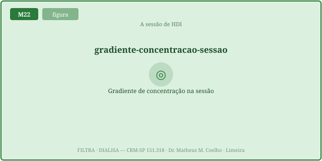
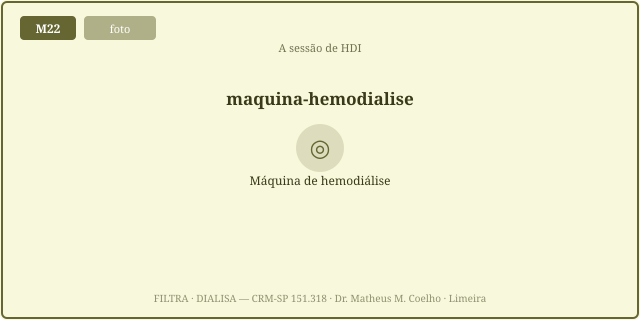
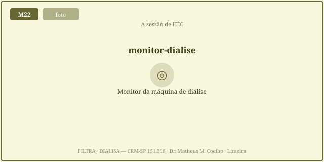
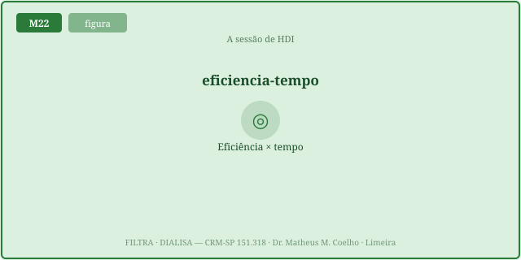
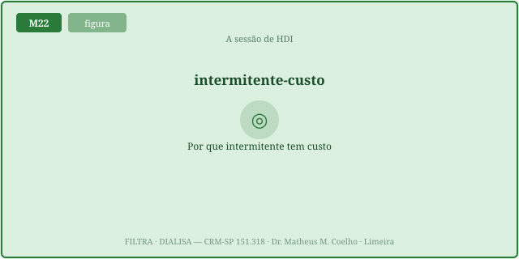
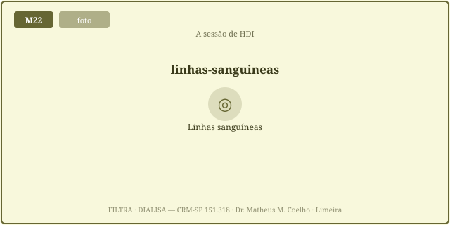

A diálise não substitui o rim — substitui parcialmente uma função
por física. Aqui, a difusão. As Fig. 1–8 voltam no Caso, na Trilha e na Avaliação (algumas
reaparecem nos exercícios). Atribuição em CREDITS.md (em curadoria).
O dialisador põe sangue e dialisato em contracorrente, separados pela membrana. O soluto difunde do sangue (alto) para o dialisato (zero) ∝ ao gradiente. Conforme a ureia do sangue cai, o gradiente cai → a remoção desacelera: nasce a cinética exponencial.


Modelo de compartimento único: a ureia se distribui na água corporal total (V ≈ ÁGT). O clearance K esvazia esse pool em exponencial. O expoente Kt/V é adimensional — a dose (aprofundada no M25). URR = (C₀−Ct)/C₀ = 1 − exp(−Kt/V).

A mesma Kt/V pode vir de muito clearance em pouco tempo (alta eficiência, grandes oscilações) ou pouco clearance em mais tempo (gentil). O rim é contínuo; a HDI faz a ureia oscilar em dente de serra — pico pré, vale pós. Duas prescrições de mesma dose não são equivalentes em tolerância.


Um acesso ruim (recirculação, baixo Qb) derruba o K efetivo → subdiálise apesar do tempo. E após o fim há rebote: a ureia reequilibra dos tecidos e sobe — o Ct medido logo após subestima a ureia real (gancho do M26).

Homem de 64 anos, ~70 kg, DRC G5 em HDI 3×/semana. BUN pré-diálise 80 mg/dL. Vamos prescrever — e ver onde o "intermitente" cobra o seu preço.
Sangue e dialisato ficam separados pela membrana, em contracorrente. O soluto difunde do lado alto (sangue) para o baixo (dialisato) ∝ ao gradiente de concentração.
Porque a cada minuto o sangue fica mais limpo → o gradiente sangue-dialisato encolhe → a velocidade de remoção cai. Daí a cinética exponencial (Fig. 1).
Compartimento único: C(t) = C₀·exp(−Kt/V), com K = clearance (mL/min), t = tempo, V = volume de distribuição da ureia ≈ ÁGT.
O expoente adimensional — a dose de diálise. Reúne clearance, tempo e volume. Alvo mínimo da HDI 3×/sem: Kt/V ≥ 1,2 (single-pool). Aprofundado no M25.
Urea Reduction Ratio = (C₀ − Ct)/C₀ = 1 − Ct/C₀ = 1 − exp(−Kt/V). Uma URR de ~65-70% corresponde a Kt/V ~1,05-1,2.
Porque o gradiente é maior no início (sangue "sujo"). A exponencial cai mais rápido cedo e achata depois — rendimento decrescente do tempo.
K e t se trocam: muito K em pouco t (alta eficiência) ou pouco K em mais t (gentil) dão o mesmo Kt/V, o mesmo Ct e a mesma média (Fig. 5).
Pela tolerância. A sessão eficiente faz oscilações osmóticas grandes → mais hipotensão e desequilíbrio. A gentil é hemodinamicamente mais segura.
O rim mantém a ureia plana e baixa. A HDI 3×/sem a deixa subir entre sessões e despencar na sessão. O perfil oscila — pico pré, vale pós (Fig. 6).
Porque a exposição urêmica é a área sob a curva ao longo do tempo, não o ponto mais baixo. O vale pós engana; cMean = (C₀−Ct)/(Kt/V).
Recirculação e baixo fluxo derrubam o K efetivo. Com o mesmo tempo, Kt/V e URR caem — a dose entregue fica abaixo da prescrita (Fig. 7).
Após desligar, a ureia reequilibra dos tecidos para o sangue e sobe ~10-15%. O Ct imediato subestima a ureia real; a URR equilibrada é menor (gancho M26).
O rim defende o meio interno continuamente; a HDI o restaura em pulsos. "Intermitente" tem custo: a homeostasia oscila, e a exposição média é o que o corpo sente.
Os controles do Lab alimentam esta curva C(t) = C₀·exp(−Kt/V). O marcador laranja é o fim da sessão (BUN pós); veja a queda íngreme cedo e o achatamento tardio — o gradiente que decai. A linha tracejada cinza marca a concentração média-no-tempo (a exposição real).
| Variável | Atual | Comentário |
|---|---|---|
| Kt/V (dose) | — | alvo ≥ 1,2 |
| URR (%) | — | = 1 − exp(−Kt/V) |
| BUN pós Ct (mg/dL) | — | o vale |
| Concentração média-no-tempo (mg/dL) | — | a exposição real |
| BUN pós + rebote (mg/dL) | — | reequilíbrio (M26) |
| Eficiência K/V (mL/min por L) | — | >8 = oscila muito |
| Desaceleração da remoção (%) | — | o gradiente decai |